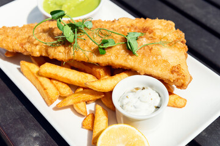

Odin Foods
Home
FISH AND CHIPS

Description
This is a good one for a Friday after work when you want something easy to help you wind down for the weekend. Minimal effort is needed, and it doesn't take too long!
Ingredients
- Frozen fish from the store
- Frozen chips from the store
- Your choice of sauce
It's that simple!
Method
- Pre-heat oven on fan bake setting to 180C
- Put your portions of frozen fish & chips on a tray lined with baking paper
- Put the tray into the oven and start a timer for 20 minutes.
- Turn over the fish and chips. Return to the over for another 5 - 15 minutes depending on how crispy you want your food, or how hungry you are!